11 管理分布式工作流
2 月 15 日，星期二，14:34
午饭刚过，Austen 就冲进 Logan 的办公室。“我一直在看新架构设计，也想帮忙。需要我写 ADR 或协助做技术探针吗？我很乐意写一份 ADR，规定新架构只使用编排，保持服务解耦。”
“慢点，你这个疯子，”Logan 说，“从哪听来的？为什么会这样想？”
“我读了很多微服务资料，所有人的建议似乎都是保持高度解耦。通信模式中，编排看起来解耦程度最高，所以我们应该始终使用它，对吧？”
“‘始终’在软件架构中是个危险词。我有位导师的观点让人印象深刻，他总说：谈论架构时永远不要使用绝对说法，除非谈论的就是绝对说法。换句话说，永远不要说‘永远不’。架构决策中，很少有什么可以用‘始终’或‘绝不’。”
“好，”Austen 说，“那么架构师怎样选择不同通信模式？”
继续分析现代分布式架构的权衡时，我们来到了量子耦合的动态部分，并把第 2 章描述和命名的许多模式具体化。事实上，即使这些具名模式也只触及现代架构中大量排列组合的一部分。因此，架构师应该理解其中发挥作用的各种力量，以便尽可能客观地进行权衡分析。
第 2 章识别了分布式架构交互模型中的三种耦合力量：通信、一致性和协调，如图 图 11.1 所示。
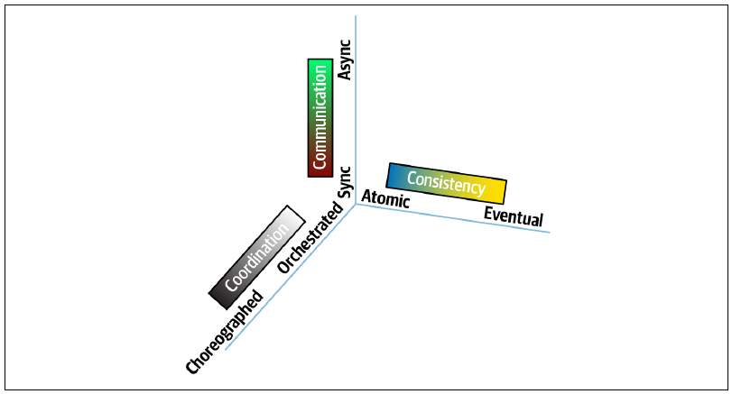
本章讨论协调：在分布式架构中组合两项或更多服务，完成某项领域工作，以及随之而来的许多问题。
分布式架构有两种基本协调模式：协调与编排。图 图 11.2 展示了两种风格在拓扑上的根本差异。协调式方案的显著特征是使用协调器，而编排式方案不使用。
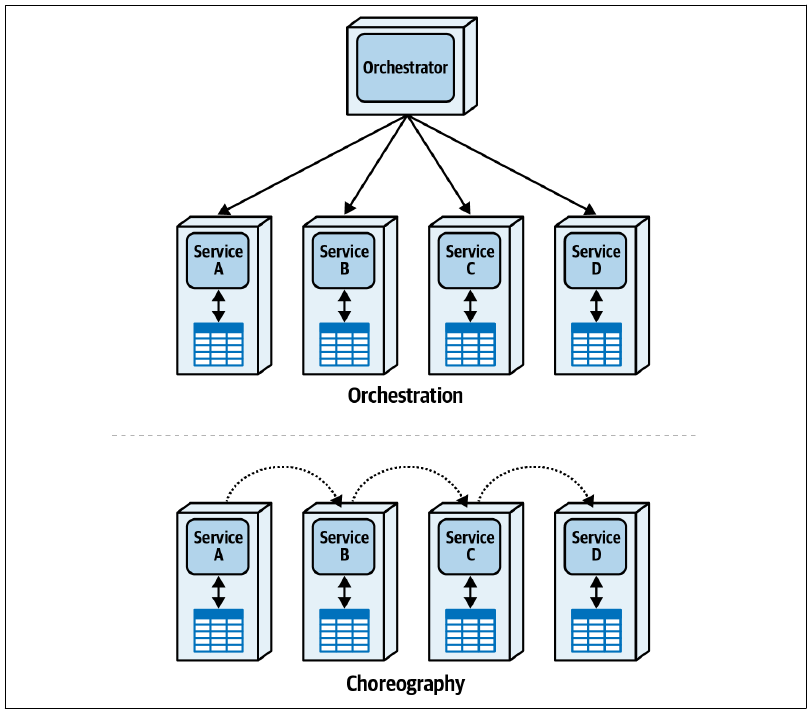
11.1 协调式通信风格
协调模式使用协调器，有时也称为中介者，来管理工作流状态、可选行为、错误处理、通知以及其他许多工作流维护任务。它以交响乐团的显著特征命名：指挥负责同步总谱中不完整的各个部分，形成统一乐曲。图 图 11.3 展示了协调最通用的形式。
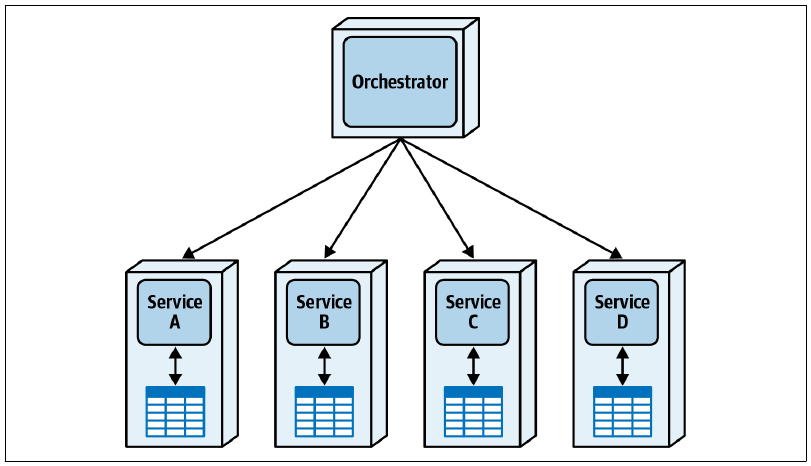
服务 A–D 都是领域服务，各自负责自己的限界上下文、数据与行为。协调器组件通常不包含它所协调工作流之外的任何领域行为。
微服务架构为每项工作流设置独立协调器，而不使用企业服务总线（ESB）之类的全局协调器。微服务风格的主要目标之一是解耦，ESB 这样的全局组件会形成不理想的耦合点。因此，微服务倾向于每个工作流使用一个协调器。
当架构师必须建模复杂工作流，除了单一“幸福路径”外还包含替代路径和错误情况时，协调非常有用。为理解这种模式的基本形态，下面先从没有错误的幸福路径开始。
考虑一个很简单的例子：Penultimate Electronics 在线向客户销售电子设备，如图 图 11.4 所示。
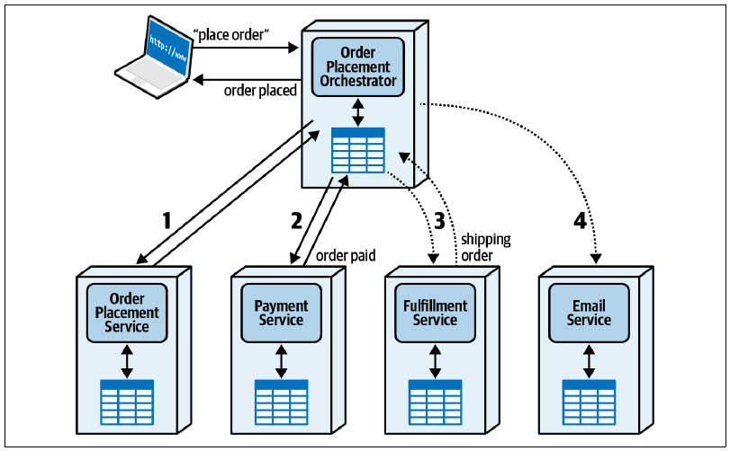
系统把“下单”请求交给订单下达协调器。协调器同步调用订单下达服务，后者记录订单并返回状态消息。接下来，中介者调用支付服务更新付款信息；再异步调用履约服务处理订单。履约不需要像付款验证那样严格依赖时间，因此采用异步调用。例如，如果每天只处理几次履约，就没有必要承担同步调用的开销。协调器同样会调用电子邮件服务，通知用户电子产品订单成功。
如果世界只有幸福路径，软件架构就会很容易。然而，错误情况与错误路径正是软件架构的主要难点之一。
考虑购买电子产品时的两种潜在错误。第一种：客户的付款方式被拒绝，会发生什么？图 图 11.5 展示了这一场景。
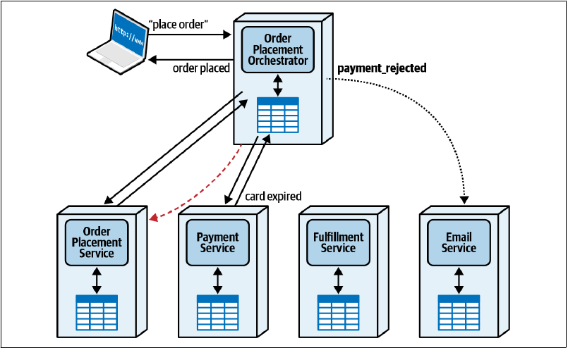
订单下达协调器仍然先通过订单下达服务更新订单；但尝试付款时，支付服务拒绝了请求，可能因为信用卡已经过期。支付服务随即通知协调器，协调器通常以异步方式调用电子邮件服务，向客户发送订单失败消息；同时更新订单下达服务的状态，因为后者仍认为这是一张有效订单。
这个例子允许每项服务维护自己的事务状态，对应第 12 章将介绍的“童话 Saga（seo）模式”。管理事务是现代架构最困难的部分之一。
第二种错误发生在工作流已经推进得更远的时候：如果履约服务报告商品缺货，需要延期交货，会怎样？图 图 11.6 展示了这个错误场景。
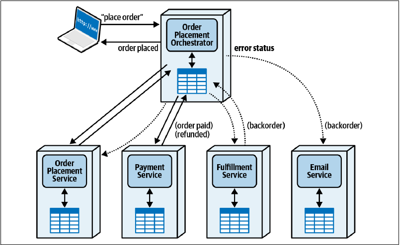
工作流按正常路径推进，直到履约服务通知协调器当前商品没有库存，必须延期交货。此时，协调器必须退还付款，这也是很多在线服务在发货而不是下单时才扣款的原因；同时还要更新订单下达服务的状态。
图 图 11.6 有一项值得注意的特点：即使错误场景相当复杂，架构师也不必增加正常工作流原本不存在的通信路径。这一点与下一节的编排式通信风格不同。
协调式通信风格的一般优点包括：
- 集中式工作流
-
随着复杂度上升，使用统一组件管理状态与行为会更有价值。
- 错误处理
-
错误处理是许多领域工作流的重要部分；为工作流设置状态所有者能让它更容易完成。
- 可恢复性
-
协调器会监控工作流状态，因此某项或多项领域服务短暂中断时，架构师可以加入重试逻辑。
- 状态管理
-
协调器使工作流状态可以查询，也为其他工作流和其他临时状态提供存放位置。
一般缺点包括：
- 响应速度
-
所有通信都必须经过中介者，可能形成吞吐量瓶颈并损害响应速度。
- 容错能力
-
协调提高领域服务的可恢复性，却也可能为工作流形成单点故障。可以通过冗余处理，但会增加复杂度。
- 可扩展性
-
协调式通信的扩展能力不如编排，因为协调器增加了协调点，降低并行处理的潜力。第 2 章介绍的多种动态耦合模式使用编排，因此能达到更高扩展能力，特别是第 12 章的“时间旅行 Saga（sec）模式”和“选集 Saga（aec）模式”。
- 服务耦合
-
中央协调器会加强它与领域组件之间的耦合，不过有时这是必要的。
表 表格 11.1 汇总了协调式通信风格的权衡。
11.1.1 权衡
| 优点 | 缺点 |
|---|---|
| 集中式工作流 | 响应速度 |
| 错误处理 | 容错能力 |
| 可恢复性 | 可扩展性 |
| 状态管理 | 服务耦合 |
11.2 编排式通信风格
协调式通信以协调器提供的中央协调为比喻命名；编排模式则通过视觉形象表达没有中央协调的通信风格。每项服务像舞伴一样与其他服务共同参与。这并不是即兴表演：动作由编舞者，也就是架构师，提前规划，却在没有中央协调者的情况下执行。
图 图 11.4 展示了客户向 Penultimate Electronics 购买电子产品的协调式工作流。图 图 11.7 使用编排式通信风格建模同一工作流。
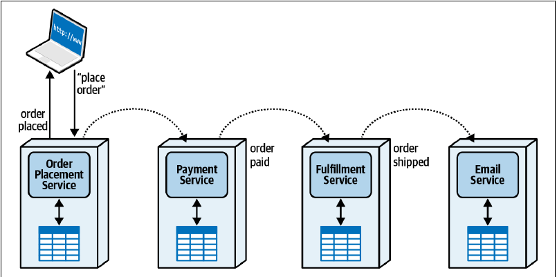
初始请求到达责任链的第一项服务，本例中是订单下达服务。更新订单内部记录后，它发送异步请求，由支付服务接收；付款完成后，支付服务生成消息，交给履约服务；履约服务安排配送，再向电子邮件服务发送消息。
乍看之下，编排方案更简单：服务数量更少，因为没有协调器，而且只是简单的事件或命令消息链。然而，与软件架构的许多问题一样，困难不在默认路径，而在边界与错误情况。
仍然考虑前述两种错误。第一种是付款失败，如图 图 11.8 所示。
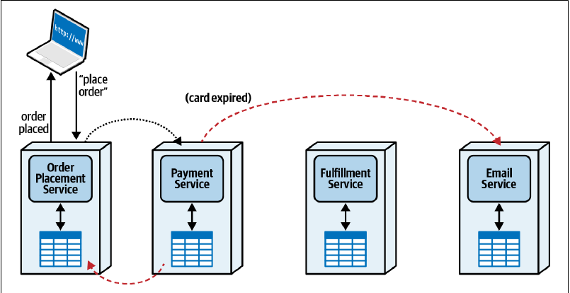
支付服务不再向履约服务发送消息，而是把失败消息分别发送给电子邮件服务与订单下达服务，后者更新订单状态。这条替代工作流看起来还不复杂，只增加了一条幸福路径中不存在的通信连接。
不过，再考虑图 图 11.9 所示的商品延期交货错误，复杂度就会上升。
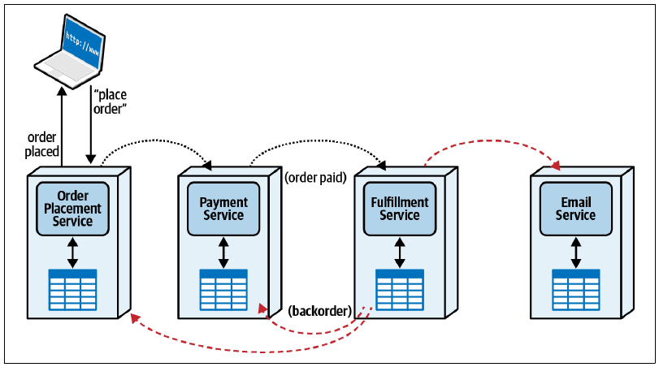
引发错误的“缺货”事件出现时，工作流已经完成了很多步骤。每项服务都实现自己的事务性，这是第 12 章“选集 Saga（aec）模式”的例子，因此错误发生时，每项服务都必须向其他服务发送补偿消息。履约服务发现错误后，应生成符合自身限界上下文的事件，也许是一条广播消息，由电子邮件、支付和订单下达服务订阅。
图 图 11.9 展示了复杂工作流与中介者之间的依赖。图 图 11.7 的初始编排工作流看起来比图 图 11.4 简单，但错误情况以及其他替代路径会持续给编排方案增加复杂度。图 图 11.10 中，每个错误场景都迫使领域服务相互交互，增加幸福路径原本不需要的通信连接。
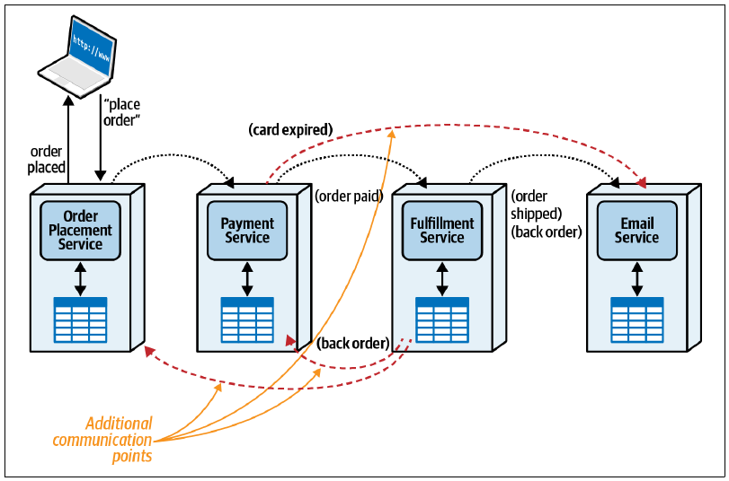
架构师需要在软件中建模的每项工作流，都包含一定程度的语义耦合，也就是问题领域固有的耦合。例如，把工单分配给 Sysops Squad 成员具有固定流程：客户请求服务，把技能与特定专家匹配，再与日程和位置交叉核对。架构师如何对这些交互建模，属于实现耦合。
工作流的语义耦合由解决方案的领域要求决定，必须以某种方式建模。无论架构师多么聪明，都无法减少语义耦合，但实现选择可能让它恶化。当然，这并不意味着架构师不能挑战业务用户定义的不切实际或不可实现语义；某些领域要求确实会造成异常困难的架构问题。
考虑标准分层单体与较现代的模块化单体，如图 图 11.11 所示。左侧传统分层架构按照持久化、业务规则等技术能力分隔；右侧同一解决方案则按照“目录结算”和“更新库存”等领域关注点，而不是技术能力分隔。
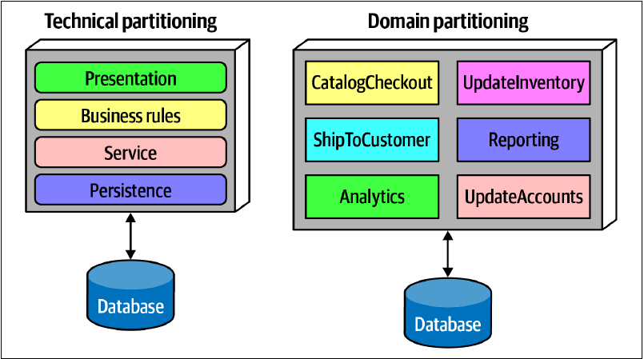
两种拓扑都是组织代码库的合理方式。不过，比较“目录结算”等领域概念在两种架构中的位置，如图 图 11.12 所示。
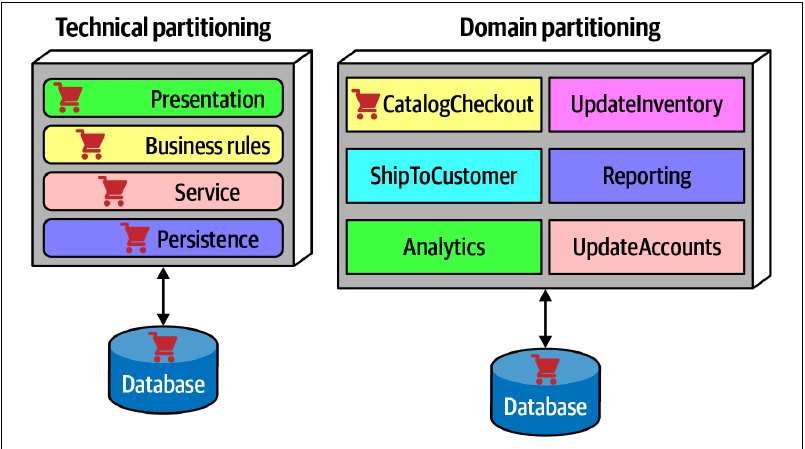
目录结算“涂抹”在技术架构的多个层中；采用领域分区时，它只出现在对应领域组件及数据库中。当然，让领域与领域分区架构对齐并不是什么新发现；领域驱动设计的一项洞见，就是领域工作流具有首要地位。
无论如何，架构师想要建模工作流，就必须让这些活动部件共同工作。如果架构与领域采用相同组织方式，工作流实现应该具有相近复杂度；如果架构师额外增加层次，例如图 图 11.12 的技术分区，就会增加总体实现复杂度，因为除了语义复杂度，还必须设计额外的实现复杂度。
额外复杂度有时值得。例如，很多分层架构来自架构师通过统一数据库连接池等架构模式节省成本的愿望。此时，架构师权衡了数据库连接技术分区带来的成本节约与它强加的复杂度，并在很多情况下取得收益。
过去十年架构设计的一项主要教训，是让实现尽可能贴近工作流语义。
架构师永远无法通过实现减少语义耦合，却可以让它变得更糟。
因此，语义耦合与协调需求之间存在关系：工作流所需步骤越多，潜在错误与其他可选路径就越多。
11.2.1 工作流状态管理
大多数工作流都包含描述状态的临时信息：哪些元素已经执行、哪些尚未执行、执行顺序、错误情况、重试等。协调式方案显然由协调器拥有工作流状态，尽管某些架构方案会为提高扩展能力而建立无状态协调器。编排则没有显而易见的状态所有者。以下是管理编排状态的三种常见选择。
第一种是前端控制器模式，把状态职责交给责任链中最先被调用的服务，本例中就是订单下达服务。它同时保存订单信息和工作流状态后，部分领域服务就必须建立通信连接，以查询和更新订单状态，如图 图 11.13 所示。
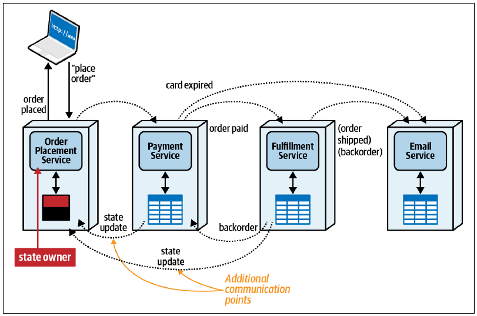
部分服务必须返回订单下达服务更新订单状态，因为它是状态所有者。这可以简化工作流，却增加通信开销，也使订单下达服务比只处理领域行为时更加复杂。表 表格 11.2 展示了前端控制器的权衡。
11.2.1.1 权衡
| 优点 | 缺点 |
|---|---|
| 在编排中建立伪协调器 | 给领域服务增加额外工作流状态 |
| 查询订单状态非常简单 | 增加通信开销 |
| 集成通信往来增加，损害性能与扩展能力 |
第二种是无状态编排：完全不保留临时工作流状态，而通过查询各项服务实时构建快照。这简化了第一项服务的状态，却显著增加服务之间的网络通信开销。
例如，图 图 11.7 的简单编排幸福路径没有额外状态。客户想知道订单状态时，架构师必须建立一项工作流，查询每项领域服务，才能确定最新状态。这种方案高度灵活，但重建状态可能很复杂，而且会损害可扩展性与性能等运行特性。无状态编排以工作流控制换取高性能，如表 表格 11.3 所示。
11.2.1.2 权衡
| 优点 | 缺点 |
|---|---|
| 提供高性能与扩展能力 | 必须即时构建工作流状态 |
| 高度解耦 | 复杂工作流会使复杂度迅速上升 |
第三种方案使用印记耦合，把额外工作流状态存进服务间传递的消息契约，第 13 章会进一步介绍。每项领域服务更新整体状态中属于自己的部分，再把它传给责任链的下一项服务。这样，契约的任何消费者都能检查工作流状态，不必查询每项服务。
这只是部分解决方案，因为用户仍然没有一个可以查询正在执行工作流状态的单一位置。不过，它让状态能够作为工作流的一部分在服务间传递，为每项服务提供可能有用的额外上下文。表 表格 11.4 展示了印记耦合的权衡。
11.2.1.3 权衡
| 优点 | 缺点 |
|---|---|
| 领域服务可以传递工作流状态，无须额外查询状态所有者 | 契约必须扩大以容纳工作流状态 |
| 不再需要前端控制器 | 无法提供即时状态查询 |
第 13 章会介绍契约如何降低或增加编排式方案中的工作流耦合。
编排式通信风格的一般优点包括：
- 响应速度：单一瓶颈更少，因此具有更多并行机会。
- 可扩展性：缺少协调器等协调点，可以进行更多独立扩展。
- 容错能力：没有单一协调器，架构师可以用多个实例提高容错能力。
- 服务解耦：没有协调器意味着耦合更少。
一般缺点包括：
- 分布式工作流：没有工作流所有者，错误管理和其他边界情况更难处理。
- 状态管理：没有中央状态保存者，妨碍持续状态管理。
- 错误处理：没有协调器，领域服务必须掌握更多工作流知识，使错误处理更加困难。
- 可恢复性：没有协调器尝试重试和其他修复措施，恢复同样更困难。
表 表格 11.5 汇总了编排式通信风格的权衡。
11.2.1.4 权衡
| 优点 | 缺点 |
|---|---|
| 响应速度 | 分布式工作流 |
| 可扩展性 | 状态管理 |
| 容错能力 | 错误处理 |
| 服务解耦 | 可恢复性 |
11.3 协调与编排之间的权衡
与软件架构中的所有事情一样，协调和编排都不是适用于所有可能性的完美方案。若干关键权衡会把架构师引向其中一种。
11.3.1 状态所有者与耦合
如图 图 11.13 所示，状态所有权通常位于某个地方：可能是充当协调器的正式中介者，也可能是编排方案中的前端控制器。编排移除中介者后，会迫使服务之间进行更多通信。这可能是完全合理的权衡。例如，如果工作流需要更高扩展能力，而且错误情况通常很少，就值得用编排的高扩展能力交换更复杂的错误处理。
不过，随着工作流复杂度上升，对协调器的需求也成比例增长，如图 图 11.14 所示。工作流包含的语义复杂度越高，协调器就越实用。记住，实现耦合无法改善语义耦合，只会让它恶化。
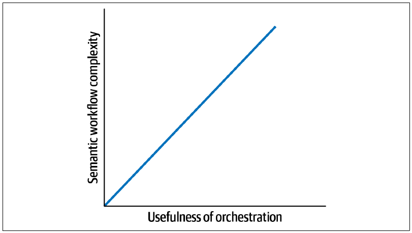
编排最适合既要求响应速度与可扩展性，又没有复杂错误场景或错误很少发生的工作流。它能提供高吞吐量，第 12 章的“传话 Saga（sac）”“时间旅行 Saga（sec）”和“选集 Saga（aec）”都使用这种风格。不过，它与其他力量混合后也可能造成极难实现的方案，形成“恐怖故事（aac）模式”。
协调则最适合包含边界与错误情况的复杂工作流。它的扩展能力不如编排，却能在多数情况下显著降低复杂度。第 12 章的“史诗 Saga（sao）”“童话 Saga（seo）”“奇幻 Saga（aao）”与“并行 Saga（aeo）”都使用这种风格。
协调是架构师决定微服务最佳通信方式时造成复杂度的主要力量之一。接下来，我们会研究它与另一项主要力量–一致性–怎样相交。
11.4 Sysops Squad 案例：管理工作流
3 月 15 日，星期四，11:00
Addison 和 Austen 准时到达 Logan 的办公室，带着演示文稿和厨房里那只仪式感十足的咖啡壶。
“准备好见我们了吗？”Addison 问。
“当然，”Logan 说，“时间正好，我刚结束电话会议。你们准备讨论主要工单流程的工作流方案了吗？”
“准备好了！”Austen 说，“我认为应该使用编排，但 Addison 认为应该协调，我们决定不了。”
“先概述一下工作流。”
“这是主要工单工作流，”Addison 说，“涉及四项服务，步骤如下。”
面向客户的操作
- 客户通过工单管理服务提交故障工单，并取得工单编号。
后台操作
- 工单分配服务为故障工单找到合适的 Sysops 专家。
- 工单分配服务把故障工单路由到系统专家的移动设备。
- 通知服务告知客户，Sysops 专家正在前往现场修复问题。
- 专家解决问题并把工单标记为完成，结果发送给工单管理服务。
- 工单管理服务与调查服务通信，请客户填写调查。
“两种方案都建模了吗？”Logan 问。
“是的。编排方案见图 图 11.15。”
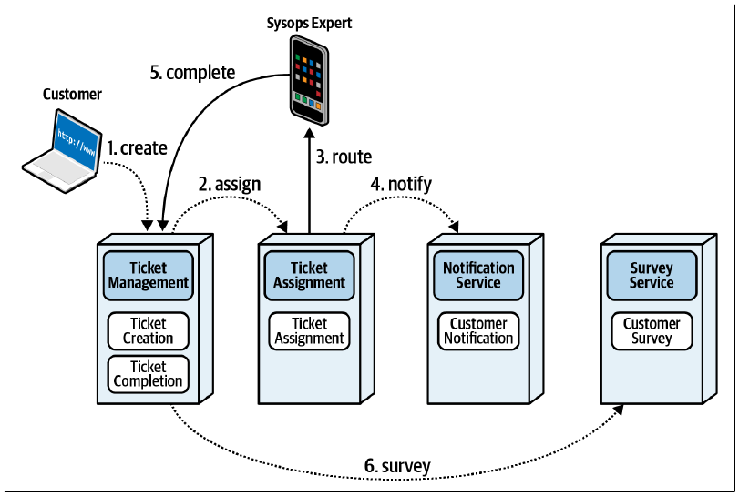
“……协调方案见图 图 11.16。”
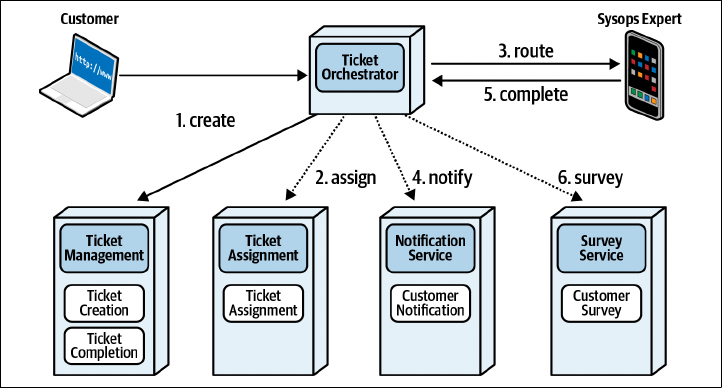
Logan 看了一会儿两张图，然后说：“看起来没有显而易见的胜者。你们知道这意味着什么。”
Austen 脱口而出：“权衡！”
“当然，”Logan 笑了，“想想可能出现的场景，看看每种方案怎样应对。你们最关心什么？”
“首先是工单丢失或路由错误，”Addison 说，“业务部门一直抱怨，这已经成为优先事项。”
“哪一种更擅长处理：协调还是编排？”
“协调器更容易控制工作流，我们可以在那里处理全部工作流问题。”Austen 主动回答。
“好，把问题与首选方案记进表 表格 11.6。”Logan 说。
11.4.1 权衡
| 协调 | 编排 |
|---|---|
| 工作流控制 |
“下一项需要建模的问题是什么？”Addison 问。
“我们需要随时知道故障工单的状态。业务部门要求这项功能，而且它也便于跟踪多项指标。这似乎意味着需要协调器，让我们能够查询工作流状态。”
“但不一定非要协调器。我们可以查询任意服务，看看它是否已经处理工作流的特定部分，也可以使用印记耦合。”Addison 说。
“没错，这不是零和游戏，”Logan 说，“两种方案都适合，或者都不适合，完全有可能。更新表 表格 11.7 时给两者都记一项。”
11.4.2 权衡
| 协调 | 编排 |
|---|---|
| 工作流控制 | |
| 状态查询 | 状态查询 |
“好，还有什么？”
“我只想到一项，”Addison 说，“客户可能取消工单；专家不可用、与专家移动设备失去连接，或者专家在客户现场延误时，也可能重新分配工单。因此，正确处理错误很重要。这意味着应该协调？”
“通常是。复杂工作流总要放在某个地方，要么集中在协调器中，要么散布到多项服务里。把错误处理集中到一处很好。而编排在这里显然得分不高，所以按表 表格 11.8 更新。”
11.4.3 权衡
| 协调 | 编排 |
|---|---|
| 工作流控制 | |
| 状态查询 | 状态查询 |
| 错误处理 |
“看起来不错。还有吗？”
“没有其他不明显的问题了，”Addison 说，“我们会写进 ADR；以后想到其他问题，可以继续补充。”